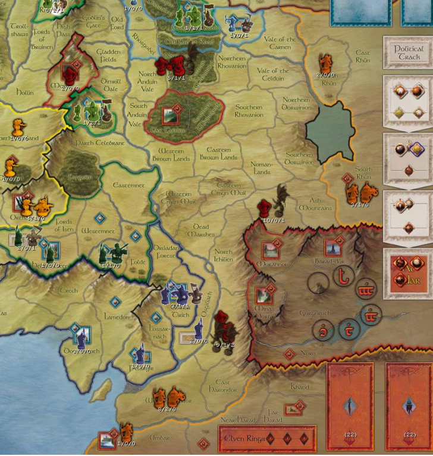
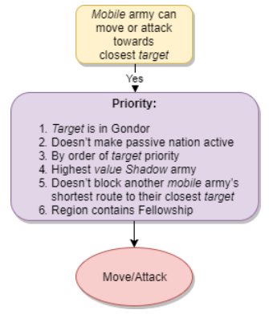

Screenshots are taken from the War of the Ring Online Client and the numbers under armies are in the format REGULARS/ELITES/LEADERS.
The bot has decided to use an army die. You follow the army flowchart until you get to the following:
So, what does the bot do? There exist in the screenshot 5 mobile armies:
- Narrows of the Forest value 13 with target Woodland Realm value 9.
- Orthanc value 11 with target Helm’s Deep value 3. We also consider the Fords of Isen value 6, which it needs to defeat to reach the target.
- South Ithilien value 18 with target Minas Tirith value 15. We also consider Osgiliath value 5, which it needs to defeat to reach the target.
- Dagorlad value 16 with target Minas Tirith value 15. We also consider Osgiliath value 5, which it needs to defeat to reach the target.
- West Harondor value 17 with target Minas Tirith value 15. We also consider Osgiliath value 5, which it needs to defeat to reach the target. Note that if Gondor becomes active then the target would switch to Pelargir.
All of them can move or attack towards their target, but which one will? We narrow down the selection using priority:
- Firstly, we narrow the selection to West Harondor, Dagorlad and Southern Ithilien because all three are heading for a target in Gondor.
- Of the remaining three armies, only one can act without making Gondor active: Dagorlad. We move Dagorlad into North Ithilien.
But we have two moves on an army die, so we’d go through the flowchart again. This time we know immediately that the army in the Narrows of the Forest must be moved to Old Forest Road. Why? Because the other armies can only attack, which would be an illegal action as we’ve already used the die to move once. In the same way an army of a nation which wasn’t at war wouldn’t be considered for attacks (though it could form the rear-guard).
Let’s go back to the beginning though. Assume the Dagorlad army was already in North Ithilien, what would happen then?
- Firstly, we narrow the selection to West Harondor, Dagorlad and Southern Ithilien because all three are heading for a target in Gondor.
- All armies would make a passive nation active, so this doesn’t help.
- All remaining armies are heading for the same target, so we can’t use target priority. Were Gondor active then we’d eliminate the West Harondor army as it would head for Pelargir, which is a lower priority target.
- The army in South Ithilien is a higher value than the other two.
We use the army die to have South Ithilien attack Osgiliath.